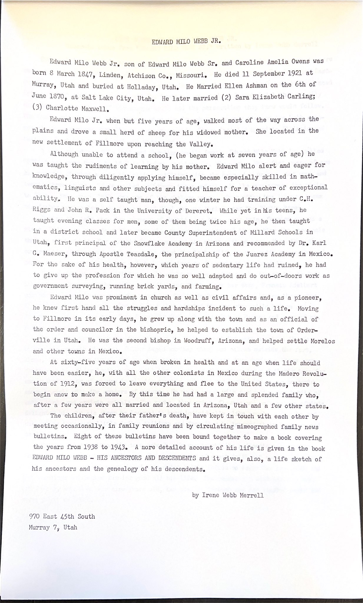
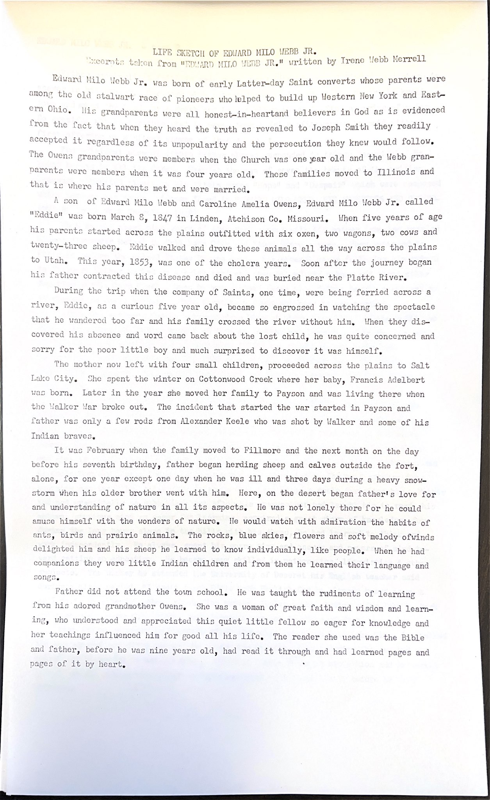
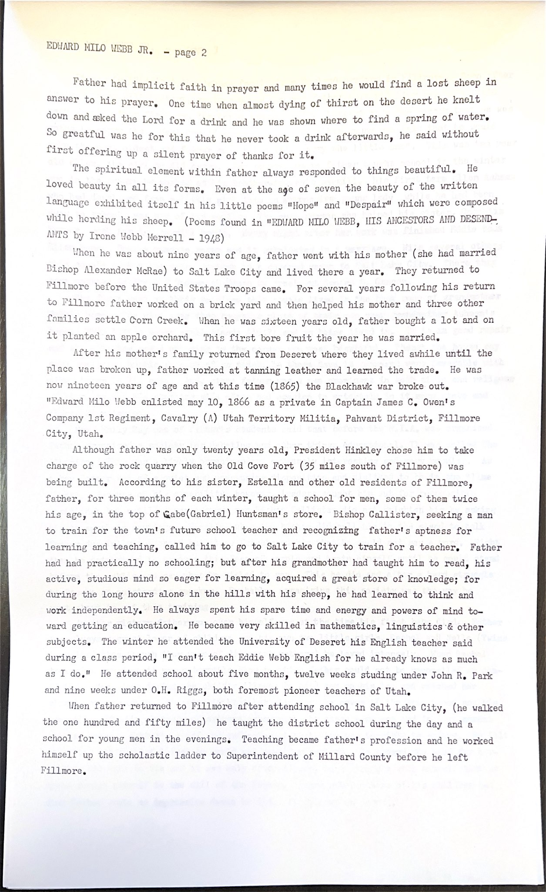
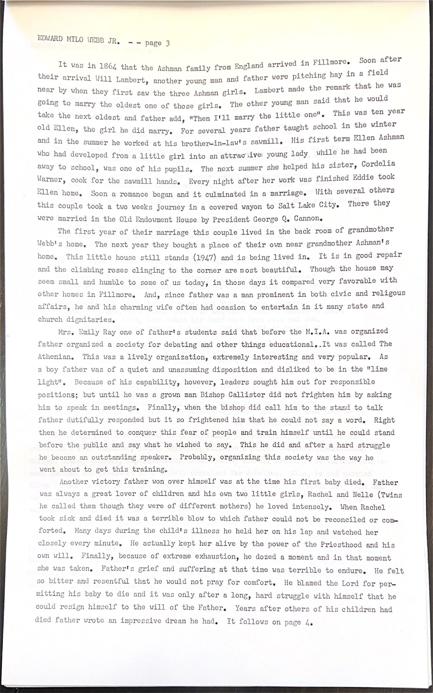
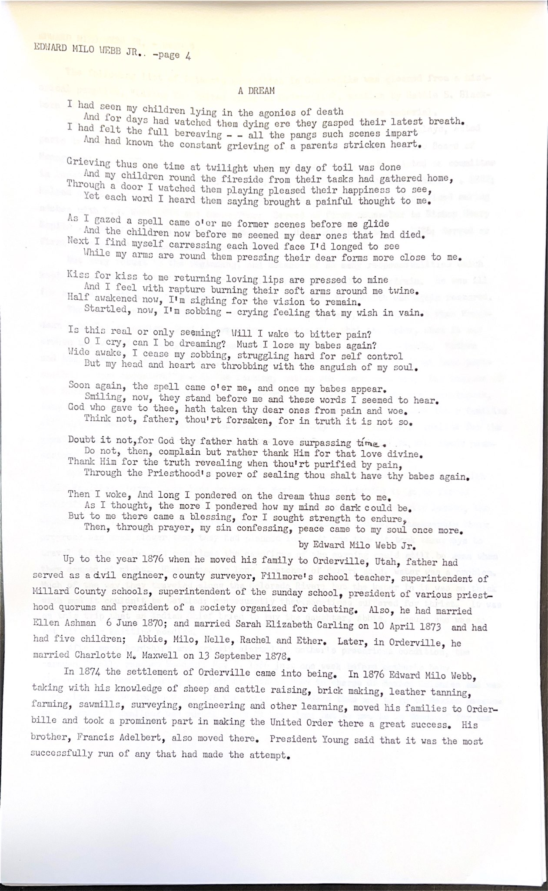
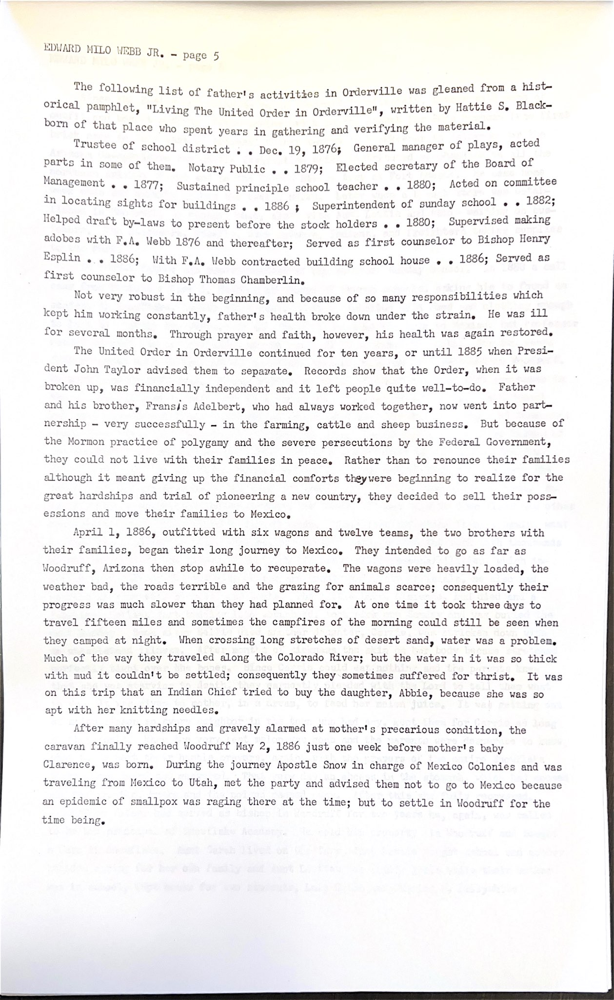
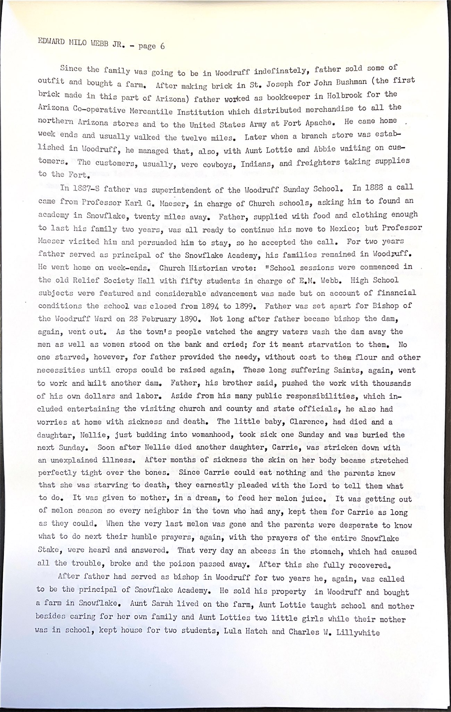
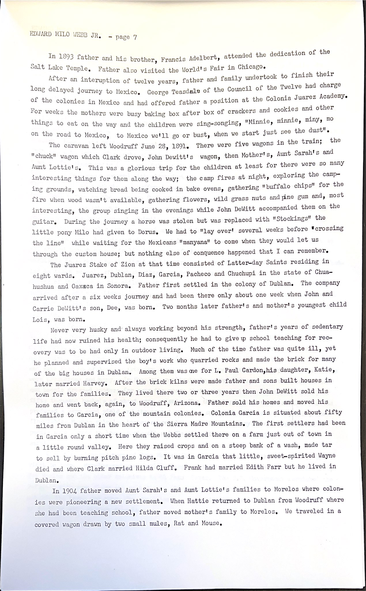
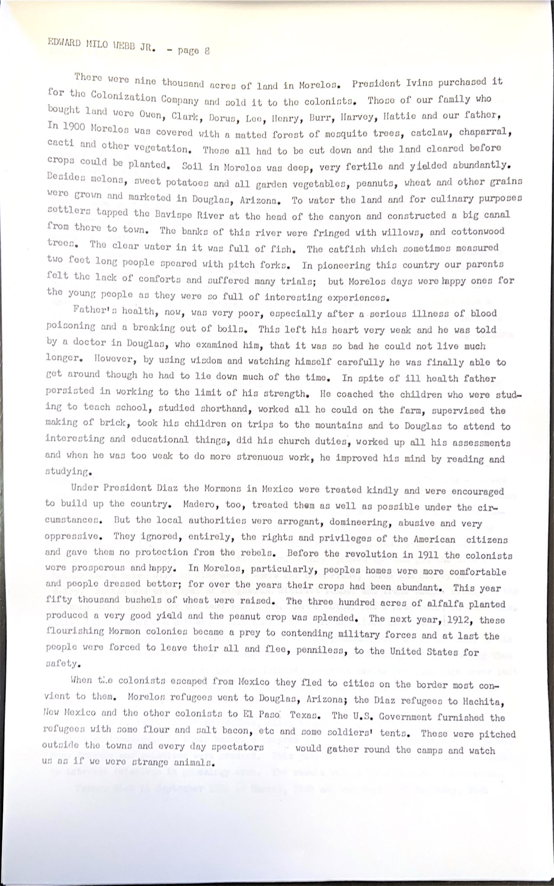
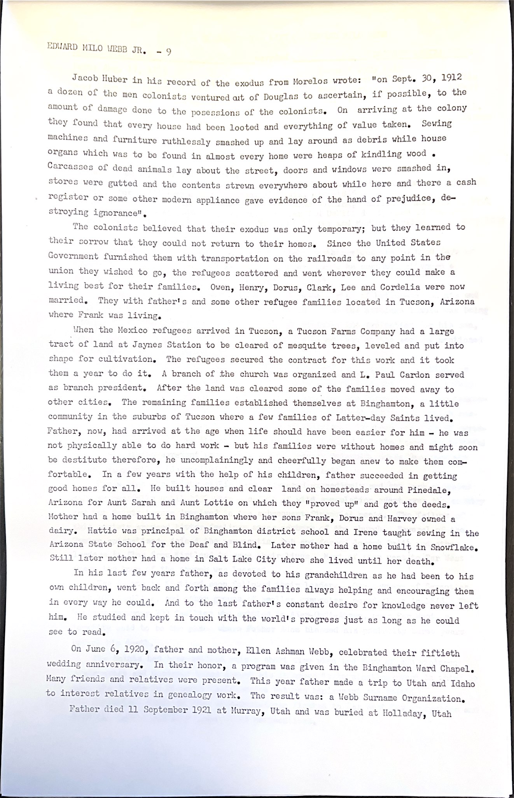

By Irene Webb Merrell. Ten original pages. Spelling and conflicting dates are retained as written; unclear overtyping is marked.

EDWARD MILO WEBB JR. Edward Milo Webb Jr. son of Edward Milo Webb Sr. and Caroline Amelia Owens was born 8 March 1847, Linden, Atchison Co., Missouri. He died 11 September 1921 at Murray, Utah and buried at Holladay, Utah. He Married Ellen Ashman on the 6th of June 1870, at Salt Lake City, Utah. He later married (2) Sara Elizabeth Carling; (3) Charlotte Maxwell. Edward Milo Jr. when but five years of age, walked most of the way across the plains and drove a small herd of sheep for his widowed mother. She located in the new settlement of Fillmore upon reaching the Valley. Although unable to attend a school, (he began work at seven years of age) he was taught the rudiments of learning by his mother. Edward Milo alert and eager for knowledge, through diligently applying himself, became especially skilled in math- ematics, linguists and other subjects and fitted himself for a teacher of exceptional ability. He was a self taught man, though, one winter he had training under C.H. Riggs and John R. Pack in the University of Dereret. While yet in his teens, he taught evening classes for men, some of them being twice his age, he then taught in a district school and later became County Superintendent of Millard Schools in Utah, first principal of the Snowflake Academy in Arizona and recommended by Dr. Karl G. Maeser, through Apostle Teasdale, the principalship of the Juarez Academy in Mexico. For the sake of his health, however, which years of sedentary life had ruined, he had to give up the profession for which he was so well adapted and do out-of-doors work as government surveying, running brick yards, and farming. Edward Milo was prominent in church as well as civil affairs and, as a pioneer, he knew first hand all the struggles and hardships incident to such a life. Moving to Fillmore in its early days, he grew up along with the town and as an official of the order and councilor in the bishopric, he helped to establish the town of Order- ville in Utah. He was the second bishop in Woodruff, Arizona, and helped settle Morelos and other towns in Mexico. At sixty-five years of age when broken in health and at an age when life should have been easier, he, with all the other colonists in Mexico during the Madero Revolu- tion of 1912, was forced to leave everything and flee to the United States, there to begin anew to make a home. By this time he had had a large and splended family who, after a few years were all married and located in Arizona, Utah and a few other states. The children, after their father's death, have kept in touch with each other by meeting occasionally, in family reunions and by circulating mimeographed family news bulletins. Eight of these bulletins have been bound together to make a book covering the years from 1938 to 1943. A more detailed account of his life is given in the book EDWARD MILO WEBB - HIS ANCESTORS AND DESCENDENTS and it gives, also, a life sketch of his ancestors and the genealogy of his descendents. by Irene Webb Merrell 970 East 45th South Murray 7, UtahTranslation: not applicable — the original is in English.

LIFE SKETCH OF EDWARD MILO WEBB JR. Excerpts taken from "EDWARD MILO WEBB JR." written by Irene Webb Merrell Edward Milo Webb Jr. was born of early Latter-day Saint converts whose parents were among the old stalwart race of pioneers who helped to build up Western New York and East- ern Ohio. His grandparents were all honest-in-heartand believers in God as is evidenced from the fact that when they heard the truth as revealed to Joseph Smith they readily accepted it regardless of its unpopularity and the persecution they knew would follow. The Owens grandparents were members when the Church was one year old and the Webb gran- parents were members when it was four years old. These families moved to Illinois and that is where his parents met and were married. A son of Edward Milo Webb and Caroline Amelia Owens, Edward Milo Webb Jr. called "Eddie" was born March 8, 1847 in Linden, Atchison Co. Missouri. When five years of age his parents started across the plains outfitted with six oxen, two wagons, two cows and twenty-three sheep. Eddie walked and drove these animals all the way across the plains to Utah. This year, 1853, was one of the cholera years. Soon after the journey began his father contracted this disease and died and was buried near the Platte River. During the trip when the company of Saints, one time, were being ferried across a river, Eddie, as a curious five year old, became so engrossed in watching the spectacle that he wandered too far and his family crossed the river without him. When they dis- covered his absence and word came back about the lost child, he was quite concerned and sorry for the poor little boy and much surprized to discover it was himself. The mother now left with four small children, proceeded across the plains to Salt Lake City. She spent the winter on Cottonwood Creek where her baby, Francis Adelbert was born. Later in the year she moved her family to Payson and was living there when the Walker War broke out. The incident that started the war started in Payson and father was only a few rods from Alexander Keele who was shot by Walker and some of his Indian braves. It was February when the family moved to Fillmore and the next month on the day before his seventh birthday, father began herding sheep and calves outside the fort, alone, for one year except one day when he was ill and three days during a heavy snow- storm when his older brother went with him. Here, on the desert began father's love for and understanding of nature in all its aspects. He was not lonely there for he could amuse himself with the wonders of nature. He would watch with admiration the habits of ants, birds and prairie animals. The rocks, blue skies, flowers and soft melody ofwinds delighted him and his sheep he learned to know individually, like people. When he had companions they were little Indian children and from them he learned their language and songs. Father did not attend the town school. He was taught the rudiments of learning from his adored grandmother Owens. She was a woman of great faith and wisdom and learn- ing, who understood and appreciated this quiet little fellow so eager for knowledge and her teachings influenced him for good all his life. The reader she used was the Bible and father, before he was nine years old, had read it through and had learned pages and pages of it by heart.Translation: not applicable — the original is in English.

EDWARD MILO WEBB JR. - page 2 Father had implicit faith in prayer and many times he would find a lost sheep in answer to his prayer. One time when almost dying of thirst on the desert he knelt down and asked the Lord for a drink and he was shown where to find a spring of water. So greatful was he for this that he never took a drink afterwards, he said without first offering up a silent prayer of thanks for it. The spiritual element within father always responded to things beautiful. He loved beauty in all its forms. Even at the age of seven the beauty of the written language exhibited itself in his little poems "Hope" and "Despair" which were composed while herding his sheep. (Poems found in "EDWARD MILO WEBB, HIS ANCESTORS AND DESEND- ANTS by Irene Webb Merrell - 1948) When he was about nine years of age, father went with his mother (she had married Bishop Alexander McRae) to Salt Lake City and lived there a year. They returned to Fillmore before the United States Troops came. For several years following his return to Fillmore father worked on a brick yard and then helped his mother and three other families settle Corn Creek. When he was sixteen years old, father bought a lot and on it planted an apple orchard. This first bore fruit the year he was married. After his mother's family returned from Deseret where they lived awhile until the place was broken up, father worked at tanning leather and learned the trade. He was now nineteen years of age and at this time (1865) the Blackhawk war broke out. "Edward Milo Webb enlisted may 10, 1866 as a private in Captain James C. Owen's Company 1st Regiment, Cavalry (A) Utah Territory Militia, Pahvant District, Fillmore City, Utah. Although father was only twenty years old, President Hinkley chose him to take charge of the rock quarry when the Old Cove Fort (35 miles south of Fillmore) was being built. According to his sister, Estella and other old residents of Fillmore, father, for three months of each winter, taught a school for men, some of them twice his age, in the top of [overtyped]Gabe(Gabriel) Huntsman's store. Bishop Callister, seeking a man to train for the town's future school teacher and recognizing father's aptness for learning and teaching, called him to go to Salt Lake City to train for a teacher. Father had had practically no schooling; but after his grandmother had taught him to read, his active, studious mind so eager for learning, acquired a great store of knowledge; for during the long hours alone in the hills with his sheep, he had learned to think and work independently. He always spent his spare time and energy and powers of mind to- ward getting an education. He became very skilled in mathematics, linguistics & other subjects. The winter he attended the University of Deseret his English teacher said during a class period, "I can't teach Eddie Webb English for he already knows as much as I do." He attended school about five months, twelve weeks studing under John R. Park and nine weeks under O.H. Riggs, both foremost pioneer teachers of Utah. When father returned to Fillmore after attending school in Salt Lake City, (he walked the one hundred and fifty miles) he taught the district school during the day and a school for young men in the evenings. Teaching became father's profession and he worked himself up the scholastic ladder to Superintendent of Millard County before he left Fillmore.Translation: not applicable — the original is in English.

EDWARD MILO WEBB JR. - - page 3 It was in 1864 that the Ashman family from England arrived in Fillmore. Soon after their arrival Will Lambert, another young man and father were pitching hay in a field near by when they first saw the three Ashman girls. Lambert made the remark that he was going to marry the oldest one of those girls. The other young man said that he would take the next oldest and father add, "Then I'll marry the little one". This was ten year old Ellen, the girl he did marry. For several years father taught school in the winter and in the summer he worked at his brother-in-law's sawmill. His first term Ellen Ashman who had developed from a little girl into an attractive young lady while he had been away to school, was one of his pupils. The next summer she helped his sister, Cordelia Warner, cook for the sawmill hands. Every night after her work was finished Eddie took Ellen home. Soon a romance began and it culminated in a marriage. With several others this couple took a two weeks journey in a covered wayon to Salt Lake City. There they were married in the Old Endowment House by President George Q. Cannon. The first year of their marriage this couple lived in the back room of grandmother Webb's home. The next year they bought a place of their own near grandmother Ashman's home. This little house still stands (1947) and is being lived in. It is in good repair and the climbing roses clinging to the corner are most beautiful. Though the house may seem small and humble to some of us today, in those days it compared very favorable with other homes in Fillmore. And, since father was a man prominent in both civic and religous affairs, he and his charming wife often had ocasion to entertain in it many state and church dignitaries. Mrs. Emily Ray one of father's students said that before the M.I.A. was organized father organized a society for debating and other things educational..It was called The Athenian. This was a lively organization, extremely interesting and very popular. As a boy father was of a quiet and unassuming disposition and disliked to be in the "lime light". Because of his capability, however, leaders sought him out for responsible positions; but until he was a grown man Bishop Callister did not frighten him by asking him to speak in meetings. Finally, when the bishop did call him to the stand to talk father dutifully responded but it so frightened him that he could not say a word. Right then he determined to conquer this fear of people and train himself until he could stand before the public and say what he wished to say. This he did and after a hard struggle he became an outstanding speaker. Probably, organizing this society was the way he went about to get this training. Another victory father won over himself was at the time his first baby died. Father was always a great lover of children and his own two little girls, Rachel and Nelle (Twins he called them though they were of different mothers) he loved intensely. When Rachel took sick and died it was a terrible blow to which father could not be reconciled or com- forted. Many days during the child's illness he held her on his lap and watched her closely every minute. He actually kept her alive by the power of the Priesthood and his own will. Finally, because of extreme exhaustion, he dozed a moment and in that moment she was taken. Father's grief and suffering at that time was terrible to endure. He felt so bitter and resentful that he would not pray for comfort. He blamed the Lord for per- mitting his baby to die and it was only after a long, hard struggle with himself that he could resign himself to the will of the Father. Years after others of his children had died father wrote an impressive dream he had. It follows on page 4.Translation: not applicable — the original is in English.

EDWARD MILO WEBB JR. -page 4
A DREAM
I had seen my children lying in the agonies of death
And for days had watched them dying ere they gasped their latest breath.
I had felt the full bereaving - - all the pangs such scenes impart
And had known the constant grieving of a parents stricken heart.
Grieving thus one time at twilight when my day of toil was done
And my children round the fireside from their tasks had gathered home,
Through a door I watched them playing pleased their happiness to see,
Yet each word I heard them saying brought a painful thought to me.
As I gazed a spell came o'er me former scenes before me glide
And the children now before me seemed my dear ones that had died.
Next I find myself carressing each loved face I'd longed to see
While my arms are round them pressing their dear forms more close to me.
Kiss for kiss to me returning loving lips are pressed to mine
And I feel with rapture burning their soft arms around me twine.
Half awakened now, I'm sighing for the vision to remain.
Startled, now, I'm sobbing - crying feeling that my wish in vain.
Is this real or only seeming? Will I wake to bitter pain?
O I cry, can I be dreaming? Must I lose my babes again?
Wide awake, I cease my sobbing, struggling hard for self control
But my head and heart are throbbing with the anguish of my soul.
Soon again, the spell came o'er me, and once my babes appear.
Smiling, now, they stand before me and these words I seemed to hear.
God who gave to thee, hath taken thy dear ones from pain and woe.
Think not, father, thou'rt forsaken, for in truth it is not so.
Doubt it not,for God thy father hath a love surpassing time.
Do not, then, complain but rather thank Him for that love divine.
Thank Him for the truth revealing when thou'rt purified by pain,
Through the Priesthood's power of sealing thou shalt have thy babes again.
Then I woke, And long I pondered on the dream thus sent to me.
As I thought, the more I pondered how my mind so dark could be.
But to me there came a blessing, for I sought strength to endure,
Then, through prayer, my sin confessing, peace came to my soul once more.
by Edward Milo Webb Jr.
Up to the year 1876 when he moved his family to Orderville, Utah, father had
served as a civil engineer, county surveyor, Fillmore's school teacher, superintendent of
Millard County schools, superintendent of the sunday school, president of various priest-
hood quorums and president of a society organized for debating. Also, he had married
Ellen Ashman 6 June 1870; and married Sarah Elizabeth Carling on 10 April 1873 and had
had five children; Abbie, Milo, Nelle, Rachel and Ether. Later, in Orderville, he
married Charlotte M. Maxwell on 13 September 1878.
In 1874 the settlement of Orderville came into being. In 1876 Edward Milo Webb,
taking with his knowledge of sheep and cattle raising, brick making, leather tanning,
farming, sawmills, surveying, engineering and other learning, moved his families to Order-
bille and took a prominent part in making the United Order there a great success. His
brother, Francis Adelbert, also moved there. President Young said that it was the most
successfully run of any that had made the attempt.Translation: not applicable — the original is in English.
EDWARD MILO WEBB JR. - page 5 The following list of father's activities in Orderville was gleaned from a hist- orical pamphlet, "Living The United Order in Orderville", written by Hattie S. Black- born of that place who spent years in gathering and verifying the material. Trustee of school district . . Dec. 19, 1876; General manager of plays, acted parts in some of them. Notary Public . . 1879; Elected secretary of the Board of Management . . 1877; Sustained principle school teacher . . 1880; Acted on committee in locating sights for buildings . . 1886 ; Superintendent of sunday school . . 1882; Helped draft by-laws to present before the stock holders . . 1880; Supervised making adobes with F.A. Webb 1876 and thereafter; Served as first counselor to Bishop Henry Esplin . . 1886; With F.A. Webb contracted building school house . . 1886; Served as first counselor to Bishop Thomas Chamberlin. Not very robust in the beginning, and because of so many responsibilities which kept him working constantly, father's health broke down under the strain. He was ill for several months. Through prayer and faith, however, his health was again restored. The United Order in Orderville continued for ten years, or until 1885 when Presi- dent John Taylor advised them to separate. Records show that the Order, when it was broken up, was financially independent and it left people quite well-to-do. Father and his brother, Frans[overtyped]s Adelbert, who had always worked together, now went into part- nership - very successfully - in the farming, cattle and sheep business. But because of the Mormon practice of polygamy and the severe persecutions by the Federal Government, they could not live with their families in peace. Rather than to renounce their families although it meant giving up the financial comforts theywere beginning to realize for the great hardships and trial of pioneering a new country, they decided to sell their poss- essions and move their families to Mexico. April 1, 1886, outfitted with six wagons and twelve teams, the two brothers with their families, began their long journey to Mexico. They intended to go as far as Woodruff, Arizona then stop awhile to recuperate. The wagons were heavily loaded, the weather bad, the roads terrible and the grazing for animals scarce; consequently their progress was much slower than they had planned for. At one time it took three days to travel fifteen miles and sometimes the campfires of the morning could still be seen when they camped at night. When crossing long stretches of desert sand, water was a problem. Much of the way they traveled along the Colorado River; but the water in it was so thick with mud it couldn't be settled; consequently they sometimes suffered for thrist. It was on this trip that an Indian Chief tried to buy the daughter, Abbie, because she was so apt with her knitting needles. After many hardships and gravely alarmed at mother's precarious condition, the caravan finally reached Woodruff May 2, 1886 just one week before mother's baby Clarence, was born. During the journey Apostle Snow in charge of Mexico Colonies and was traveling from Mexico to Utah, met the party and advised them not to go to Mexico because an epidemic of smallpox was raging there at the time; but to settle in Woodruff for the time being.Translation: not applicable — the original is in English.

EDWARD MILO WEBB JR. - page 6 Since the family was going to be in Woodruff indefinately, father sold some of outfit and bought a farm. After making brick in St. Joseph for John Bushman (the first brick made in this part of Arizona) father worked as bookkeeper in Holbrook for the Arizona Co-operative Mercantile Institution which distributed merchandise to all the northern Arizona stores and to the United States Army at Fort Apache. He came home week ends and usually walked the twelve miles. Later when a branch store was estab- lished in Woodruff, he managed that, also, with Aunt Lottie and Abbie waiting on cus- tomers. The customers, usually, were cowboys, Indians, and freighters taking supplies to the Fort. In 1887-8 father was superintendent of the Woodruff Sunday School. In 1888 a call came from Professor Karl G. Maeser, in charge of Church schools, asking him to found an academy in Snowflake, twenty miles away. Father, supplied with food and clothing enough to last his family two years, was all ready to continue his move to Mexico; but Professor Maeser visited him and persuaded him to stay, so he accepted the call. For two years father served as principal of the Snowflake Academy, his families remained in Woodruff. He went home on week-ends. Church Historian wrote: "School sessions were commenced in the old Relief Society Hall with fifty students in charge of E.M. Webb. High School subjects were featured and considerable advancement was made but on account of financial conditions the school was closed from 1894 to 1899. Father was set apart for Bishop of the Woodruff Ward on 28 February 1890. Not long after father became bishop the dam, again, went out. As the town's people watched the angry waters wash the dam away the men as well as women stood on the bank and cried; for it meant starvation to them. No one starved, however, for father provided the needy, without cost to them flour and other necessities until crops could be raised again. These long suffering Saints, again, went to work and built another dam. Father, his brother said, pushed the work with thousands of his own dollars and labor. Aside from his many public responsibilities, which in- cluded entertaining the visiting church and county and state officials, he also had worries at home with sickness and death. The little baby, Clarence, had died and a daughter, Nellie, just budding into womanhood, took sick one Sunday and was buried the next Sunday. Soon after Nellie died another daughter, Carrie, was stricken down with an unexplained illness. After months of sickness the skin on her body became stretched perfectly tight over the bones. Since Carrie could eat nothing and the parents knew that she was starving to death, they earnestly pleaded with the Lord to tell them what to do. It was given to mother, in a dream, to feed her melon juice. It was getting out of melon season so every neighbor in the town who had any, kept them for Carrie as long as they could. When the very last melon was gone and the parents were desperate to know what to do next their humble prayers, again, with the prayers of the entire Snowflake Stake, were heard and answered. That very day an abcess in the stomach, which had caused all the trouble, broke and the poison passed away. After this she fully recovered. After father had served as bishop in Woodruff for two years he, again, was called to be the principal of Snowflake Academy. He sold his property in Woodruff and bought a farm in Snowflake. Aunt Sarah lived on the farm, Aunt Lottie taught school and mother besides caring for her own family and Aunt Lotties two little girls while their mother was in school, kept house for two students, Lula Hatch and Charles W. LillywhiteTranslation: not applicable — the original is in English.

EDWARD MILO WEBB JR. - page 7 In 1893 father and his brother, Francis Adelbert, attended the dedication of the Salt Lake Temple. Father also visited the World's Fair in Chicago. After an interuption of twelve years, father and family undertook to finish their long delayed journey to Mexico. George Teasdale of the Council of the Twelve had charge of the colonies in Mexico and had offered father a position at the Colonia Juarez Academy. For weeks the mothers were busy baking box after box of crackers and cookies and other things to eat on the way and the children were sing-songing, "Minnie, minnie, miny, mo on the road to Mexico, to Mexico we'll go or bust, when we start just see the dust". The caravan left Woodruff June 28, 1891. There were five wagons in the train; the "chuck" wagon which Clark drove, John Dewitt's wagon, then Mother's, Aunt Sarah's and Aunt Lottie's. This was a glorious trip for the children at least for there were so many interesting things for them along the way; the camp fires at night, exploring the camp- ing grounds, watching bread being cooked in bake ovens, gathering "buffalo chips" for the fire when wood wasn't available, gathering flowers, wild grass nuts and pine gum and, most interesting, the group singing in the evenings while John DeWitt accompanied them on the guitar. During the journey a horse was stolen but was replaced with "Stockings" the little pony Milo had given to Dorus. We had to "lay over" several weeks before "crossing the line" while waiting for the Mexicans "manyana" to come when they would let us through the custom house; but nothing else of conquence happened that I can remember. The Juarez Stake of Zion at that time consisted of Latter-day Saints residing in eight wards. Juarez, Dublan, Diaz, Garcia, Pacheco and Chuchupi in the state of Chua- hushua and Oaxaca in Sonora. Father first settled in the colony of Dublan. The company arrived after a six weeks journey and had been there only about one week when John and Carrie DeWitt's son, Dee, was born. Two months later father's and mother's youngest child Lois, was born. Never very husky and always working beyond his strength, father's years of sedentary life had now ruined his health; consequently he had to give up school teaching for rec- overy was to be had only in outdoor living. Much of the time father was quite ill, yet he planned and supervised the boy's work who quarried rocks and made the brick for many of the big houses in Dublan. Among them was one for L. Paul Cardon,his daughter, Katie, later married Harvey. After the brick kilns were made father and sons built houses in town for the families. They lived there two or three years then John DeWitt sold his home and went back, again, to Woodruff, Arizona. Father sold his homes and moved his families to Garcia, one of the mountain colonies. Colonia Garcia is situated about fifty miles from Dublan in the heart of the Sierra Madre Mountains. The first settlers had been in Garcia only a short time when the Webbs settled there on a farm just out of town in a little round valley. Here they raised crops and on a steep bank of a wash, made tar to sell by burning pitch pine logs. It was in Garcia that little, sweet-spirited Wayne died and where Clark married Hilda Cluff. Frank had married Edith Farr but he lived in Dublan. In 1904 father moved Aunt Sarah's and Aunt Lottie's families to Morelos where colon- ies were pioneering a new settlement. When Hattie returned to Dublan from Woodruff where she had been teaching school, father moved mother's family to Morelos. We traveled in a covered wagon drawn by two small mules, Rat and Mouse.Translation: not applicable — the original is in English.

EDWARD MILO WEBB JR. - page 8 There were nine thousand acres of land in Morelos. President Ivins purchased it for the Colonization Company and sold it to the colonists. Those of our family who bought land were Owen, Clark, Dorus, Lee, Henry, Burr, Harvey, Hattie and our father. In 1900 Morelos was covered with a matted forest of mesquite trees, catclaw, chaparral, cacti and other vegetation. These all had to be cut down and the land cleared before crops could be planted. Soil in Morelos was deep, very fertile and yielded abundantly. Besides melons, sweet potatoes and all garden vegetables, peanuts, wheat and other grains were grown and marketed in Douglas, Arizona. To water the land and for culinary purposes settlers tapped the Bavispe River at the head of the canyon and constructed a big canal from there to town. The banks of this river were fringed with willows, and cottonwood trees. The clear water in it was full of fish. The catfish which sometimes measured two feet long people speared with pitch forks. In pioneering this country our parents felt the lack of comforts and suffered many trials; but Morelos days were happy ones for the young people as they were so full of interesting experiences. Father's health, now, was very poor, especially after a serious illness of blood poisoning and a breaking out of boils. This left his heart very weak and he was told by a doctor in Douglas, who examined him, that it was so bad he could not live much longer. However, by using wisdom and watching himself carefully he was finally able to get around though he had to lie down much of the time. In spite of ill health father persisted in working to the limit of his strength. He coached the children who were stud- ing to teach school, studied shorthand, worked all he could on the farm, supervised the making of brick, took his children on trips to the mountains and to Douglas to attend to interesting and educational things, did his church duties, worked up all his assessments and when he was too weak to do more strenuous work, he improved his mind by reading and studying. Under President Diaz the Mormons in Mexico were treated kindly and were encouraged to build up the country. Madero, too, treated them as well as possible under the cir- cumstances. But the local authorities were arrogant, domineering, abusive and very oppressive. They ignored, entirely, the rights and privileges of the American citizens and gave them no protection from the rebels. Before the revolution in 1911 the colonists were prosperous and happy. In Morelos, particularly, peoples homes were more comfortable and people dressed better; for over the years their crops had been abundant. This year fifty thousand bushels of wheat were raised. The three hundred acres of alfalfa planted produced a very good yield and the peanut crop was splended. The next year, 1912, these flourishing Mormon colonies became a prey to contending military forces and at last the people were forced to leave their all and flee, penniless, to the United States for safety. When the colonists escaped from Mexico they fled to cities on the border most con- vient to them. Morelos refugees went to Douglas, Arizona; the Diaz refugees to Hachita, New Mexico and the other colonists to El Paso, Texas. The U.S. Government furnished the refugees with some flour and salt bacon, etc and some soldiers' tents. These were pitched outside the towns and every day spectators would gather round the camps and watch us as if we were strange animals.Translation: not applicable — the original is in English.

EDWARD MILO WEBB JR. - 9 Jacob Huber in his record of the exodus from Morelos wrote: "on Sept. 30, 1912 a dozen of the men colonists ventured out of Douglas to ascertain, if possible, to the amount of damage done to the posessions of the colonists. On arriving at the colony they found that every house had been looted and everything of value taken. Sewing machines and furniture ruthlessly smashed up and lay around as debris while house organs which was to be found in almost every home were heaps of kindling wood . Carcasses of dead animals lay about the street, doors and windows were smashed in, stores were gutted and the contents strewn everywhere about while here and there a cash register or some other modern appliance gave evidence of the hand of prejudice, de- stroying ignorance". The colonists believed that their exodus was only temporary; but they learned to their sorrow that they could not return to their homes. Since the United States Government furnished them with transportation on the railroads to any point in the union they wished to go, the refugees scattered and went wherever they could make a living best for their families. Owen, Henry, Dorus, Clark, Lee and Cordelia were now married. They with father's and some other refugee families located in Tucson, Arizona where Frank was living. When the Mexico refugees arrived in Tucson, a Tucson Farms Company had a large tract of land at Jaynes Station to be cleared of mesquite trees, leveled and put into shape for cultivation. The refugees secured the contract for this work and it took them a year to do it. A branch of the church was organized and L. Paul Cardon served as branch president. After the land was cleared some of the families moved away to other cities. The remaining families established themselves at Binghamton, a little community in the suburbs of Tucson where a few families of Latter-day Saints lived. Father, now, had arrived at the age when life should have been easier for him - he was not physically able to do hard work - but his families were without homes and might soon be destitute therefore, he uncomplainingly and cheerfully began anew to make them com- fortable. In a few years with the help of his children, father succeeded in getting good homes for all. He built houses and clear land on homesteads around Pinedale, Arizona for Aunt Sarah and Aunt Lottie on which they "proved up" and got the deeds. Mother had a home built in Binghamton where her sons Frank, Dorus and Harvey owned a dairy. Hattie was principal of Binghamton district school and Irene taught sewing in the Arizona State School for the Deaf and Blind. Later mother had a home built in Snowflake. Still later mother had a home in Salt Lake City where she lived until her death. In his last few years father, as devoted to his grandchildren as he had been to his own children, went back and forth among the families always helping and encouraging them in every way he could. And to the last father's constant desire for knowledge never left him. He studied and kept in touch with the world's progress just as long as he could see to read. On June 6, 1920, father and mother, Ellen Ashman Webb, celebrated their fiftieth wedding anniversary. In their honor, a program was given in the Binghamton Ward Chapel. Many friends and relatives were present. This year father made a trip to Utah and Idaho to interest relatives in genealogy work. The result was: a Webb Surname Organization. Father died 11 September 1921 at Murray, Utah and was buried at Holladay, UtahTranslation: not applicable — the original is in English.